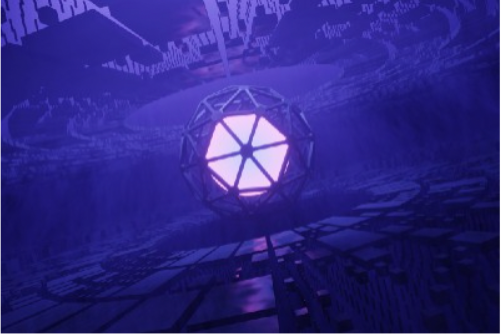
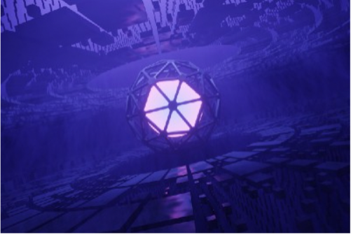

React state management in 2022 - Return of the Redux
At the beginning of the year if you told me I'd be publishing a
recommendation to use Redux
Dec.3 - 4 min read - - Popular on Medium
How to Sanitize Your Express App Against MongoDB injection & Cross-site scripting.
Easiest way to sanitize your express app.
Dec19 - 6 min read - - Based on your reading history
React 18 new features and updates
Know about some cool features and updates of react 18.
Nov24 - 4 min read - - Popular on Medium
Understanding re-rendering and memoization in React
The following are quick tips to increase performance in your React
application by understanding re-rendering and memoization.
Dec6 - 4 min read - - Popular on Medium
Why get Rid Of Promises To Fetch Data In React?
How you can make your code well structured!!
Dec.3 - 4 min read - - Popular on Medium
15 best web appa ideas for a startup in 2021
15 startup ideas and technologies that could make you a millionaire
Oct29 - 4 min read - - Popular on Medium
 


Recommended topics
Who to follow
law professor, activist
Author
Writer
Recently saved
The Feynman technique Will make you
Remember what you read
Oct 2,2020 - 6 min read
Hi.
Oct 27,2020 - 8 min read
See all(3)